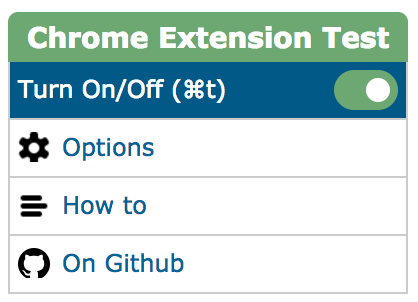
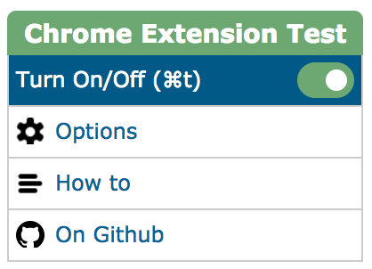

How to use the Chrome Extension Test
1. Turn the Selector on
2. Go to the extension settings and select your tabs number limit.
3. Now you have a limit of tabs.
1. Turn the Selector on
2. Go to the extension settings and select your tabs number limit.
3. Now you have a limit of tabs.